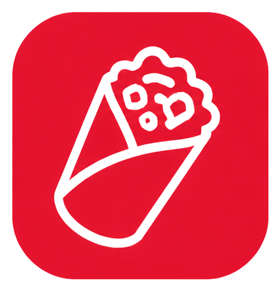
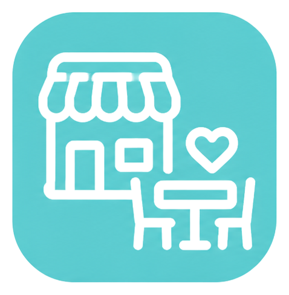

Tu favorito está listo
Comida casual, fresca y llena de sabor para todos los días.
Wraps, quesadillas, burritos, paninis, nachos, ensaladas y salsas preparados para comer rico con el sello Yuyupa. Una propuesta fresca, rápida y con identidad propia.
Comida casual, fresca y llena de sabor para todos los días.


Una carta versátil, colorida y fácil de disfrutar: wraps, quesadillas, paninis, nachos, burritos y opciones frescas.
Variedad de wraps y quesadillas artesanales, ideales para compartir o disfrutar en cualquier momento.
Paninis crujientes, nachos y burritos contundentes, versátiles y pensados para todos los gustos.
Opciones frescas y ligeras como ensaladas de vegetales, ensaladas de frutas y preparaciones naturales.
Tres opciones llenas de sabor para disfrutar, compartir y volver por más.
El consentido de la casa: pollo, guacamole, queso cheddar, maíz dulce, lechuga y mayonesa de la casa.
Nachos crujientes con carne de res molida, frijoles, queso, guacamole y salsa de la casa: una opción perfecta para compartir.
Nuestro burrito combina queso cheddar, sazón única y mayonesa de la casa, llevado al grill para un acabado dorado.
Un espacio para disfrutar, compartir y volver. Yuyupa se siente cercano, fresco y perfecto para un plan relajado.
EscríbenosYuyupa se adapta a ferias, cumpleaños, activaciones, reuniones y espacios al aire libre con una propuesta casual, sabrosa y fácil de disfrutar.
Escríbenos, pregunta por el menú del día o separa Yuyupa para tu próximo evento.